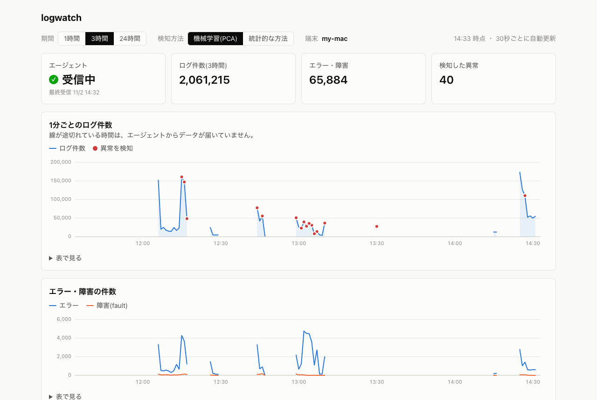

logwatch
Macのシステムログを1分ごとに集計してサーバーに送り、平常時から外れた動きを検知してダッシュボードに表示する仕組みです。
- 最初の検知方法では、作業を始めただけで30分に約1,400件の誤報が出たため、知らせる対象を見直しました。
- 実データに既知の異常を混ぜて精度を測る仕組みを作り、統計的な方法と主成分分析(PCA)を比べました。検出率は12%から35%に上がり、通知は1時間あたり13件から7件に減りました。
- ログの本文は送らず件数だけを扱い、送信に失敗して再送しても件数が二重にならないようにしています。